Integrity
Upholding honesty, accountability, and transparency in every response and decision.
Saving lives is our business
Alpha 10 Emergency Responders is a disciplined team of certified responders dedicated to safeguarding lives during medical emergencies, disasters, and public safety incidents. We combine rapid response, structured training, and strong governance to protect communities.
Upholding honesty, accountability, and transparency in every response and decision.
Providing care with dignity, respect, and empathy to every patient and family.
Stepping forward with confidence in moments of crisis to protect life and community.
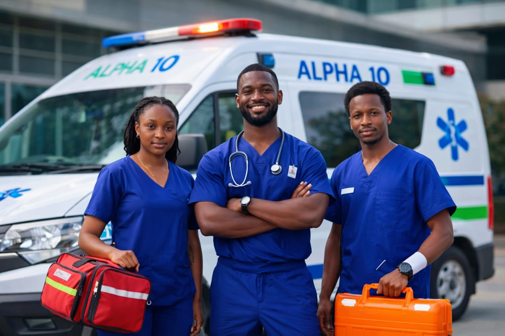
Integrity. Compassion. Courage. Alpha 10 Emergency Responders stands ready wherever lives need to be protected.
Organisations and individuals who have worked with Alpha 10 Emergency Responders share how our professionalism, training quality, and commitment to safety make a difference.
Membership is open to individuals aged 18 and above who have completed certified emergency response training (for example CPR, first aid or disaster response certification) and who are committed to the Alpha 10 mission and Code of Conduct.
Prepare your CV, application letter and recent passport photo and email them to alphaemergencyresponders9@gmail.com. Shortlisted candidates will be contacted with next steps.
Yes. Through our Services, Alpha 10 offers training and capacity building including First Aid, CPR and disaster preparedness programmes for individuals, organisations and community groups.
Alpha 10 Emergency Responders is based in Kasarani, Nairobi, Kenya and operates with a global vision for emergency response and training.
Alpha 10 Emergency Responders is a professional emergency response organisation inspired by a commitment to safeguard lives during medical emergencies, natural disasters and public safety incidents. We exist to promote preparedness, rapid response and professionalism in every emergency.
We bring together trained responders, instructors and coordinators who share a common vision: to protect communities, support survivors and stand ready wherever people are vulnerable or at risk.
Our management team oversees operations, training standards, governance documents and partnerships, making sure that every activity reflects our core values of courage, compassion and integrity.
Through structured leadership, regular meetings and continuous skills development, Alpha 10 strengthens resilience, promotes safety awareness and prepares individuals and organisations to respond confidently when emergencies occur.
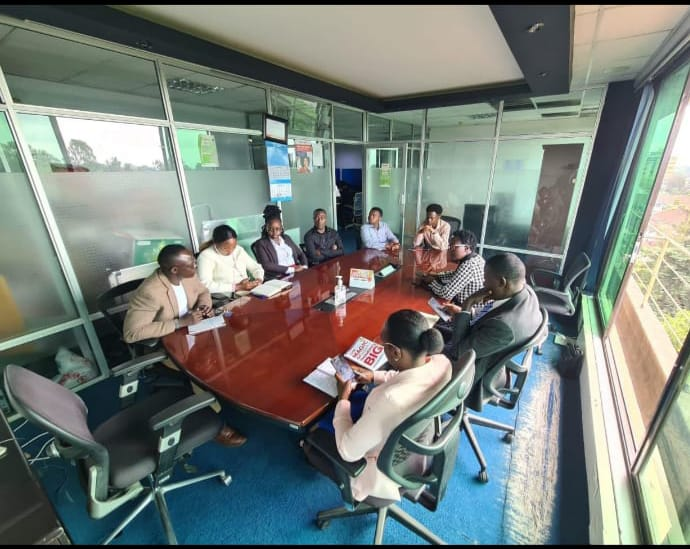
Alpha 10 is led by a dedicated management team that coordinates emergency response, training programmes and organisational governance on behalf of our members.
Physical meetings and practical drills are communicated in advance, with the date, time and venue shared officially to all members. Our home base is Kasarani, Nairobi, and venues are selected to support safe, effective emergency response training.
To provide coordinated, timely, and effective emergency response services through professionalism, compassion, and efficiency.
We are committed to saving lives, protecting communities, and supporting survivors through every stage of emergencies.
To be a trusted, world-class emergency response team that saves lives and empowers communities to respond to emergencies, shaping the future of healthcare globally.
Stepping forward in moments of crisis with confidence, composure, and commitment to protect life.
Providing care with empathy, respect, and dignity for every patient, family, and community we serve.
Upholding honesty, accountability, and transparency in every action, decision, and interaction.
Alpha 10 Emergency Responders provides immediate assistance during medical and public safety emergencies while also investing in drills, structured training, and community safety education.
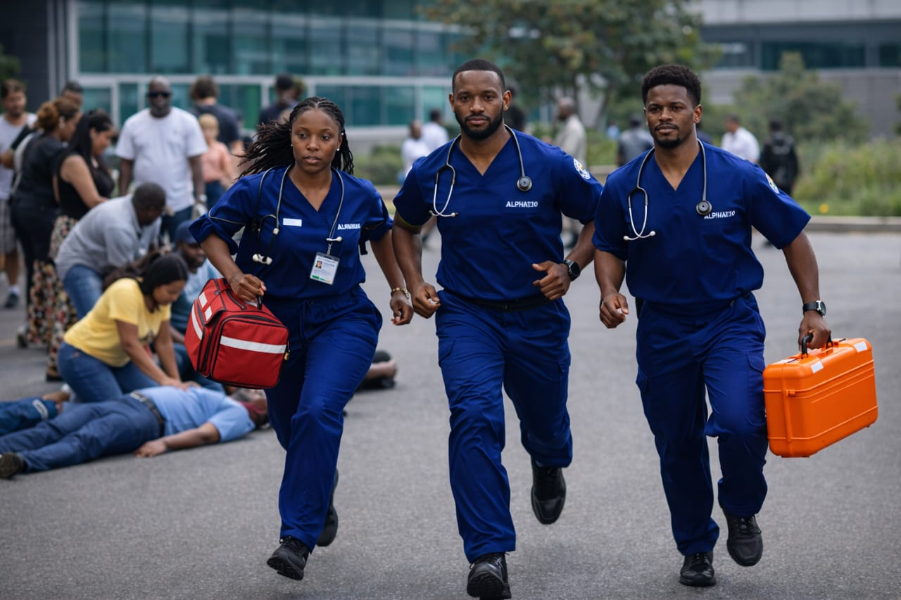
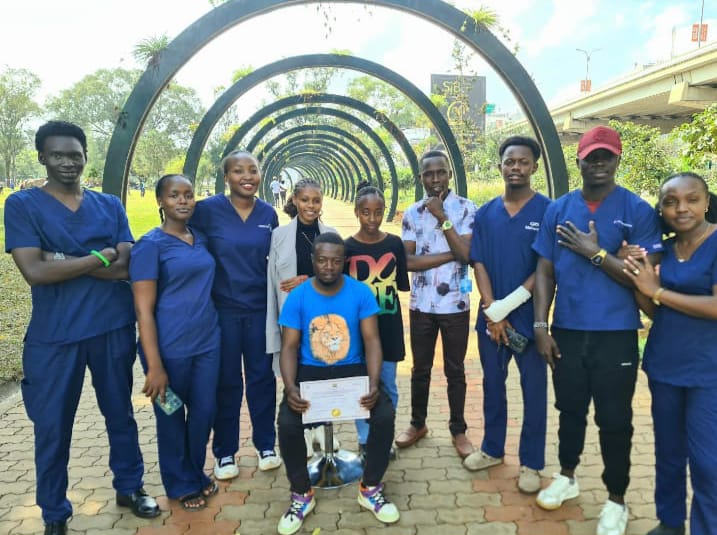
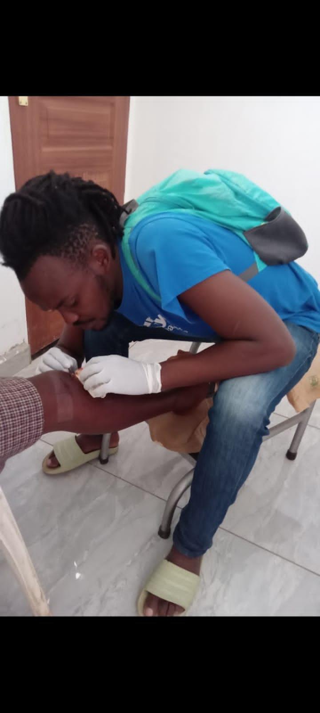
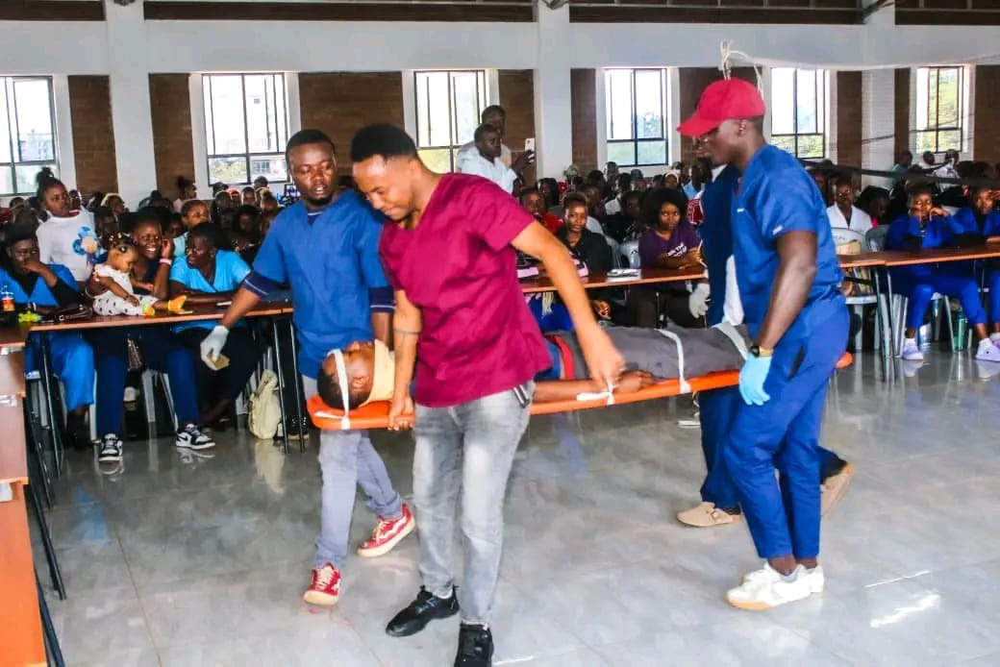
Alpha 10 Emergency Responders takes life-saving skills into estates, schools and local gatherings so that ordinary citizens can act confidently before an ambulance or emergency vehicle arrives.
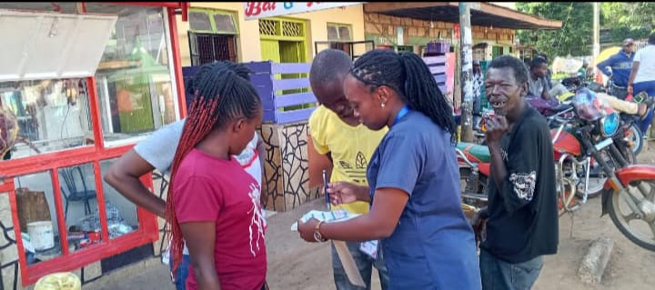
Alpha 10 facilitators hold structured first aid clinics within neighbourhoods, explaining how to assess a scene, call for help and give safe, immediate care while professional responders are on the way.
By using everyday language and real examples from the community, these sessions build trust and ensure that residents of all ages feel confident stepping forward when emergencies occur.
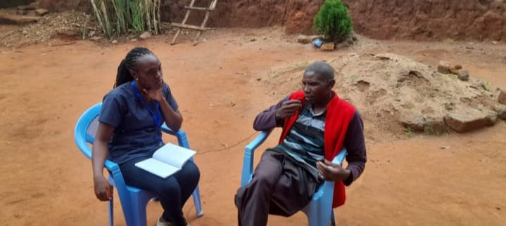
Working with youth groups, schools and organised teams, Alpha 10 emphasises practical, hands-on skills such as CPR, bleeding control, recovery positions and safe patient movement.
Every session is interactive, allowing participants to practise on manikins and with scenarios so that critical skills are remembered long after the training day is over.
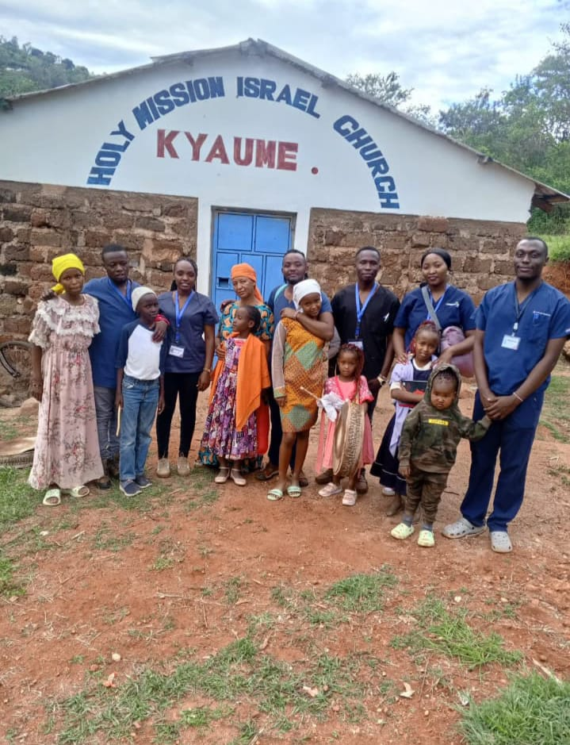
Beyond the classroom, Alpha 10 coordinates joint drills that simulate real emergencies, from collapses and road incidents to crowd events where rapid response is essential.
These drills strengthen relationships between responders, community leaders and residents, ensuring that when a real incident happens everyone understands their role and responds with courage, compassion and integrity.
Alpha 10 Emergency Responders is proud to partner with Pimac International. Together, we advance emergency care standards, training excellence, and community outreach programmes.
This partnership strengthens our ability to deliver high-impact emergency response, capacity building, and safety education across communities.
In Partnership With
Pimac International
Together with our strategic partner Pimac International, Alpha 10 Emergency Responders joined the send-off of Rt. Hon. Raila Odinga to stand in solidarity with the nation and demonstrate respectful, disciplined emergency presence at a high-profile event.
Our role at such events is to provide organised medical cover, clear communication pathways and dignified support for mourners, officials and service teams, so that health and safety is protected even in emotionally charged moments.
By working closely with Pimac International and other partners, Alpha 10 shows how professional emergency responders can contribute quietly but powerfully wherever Kenyans gather to honour leaders and loved ones.
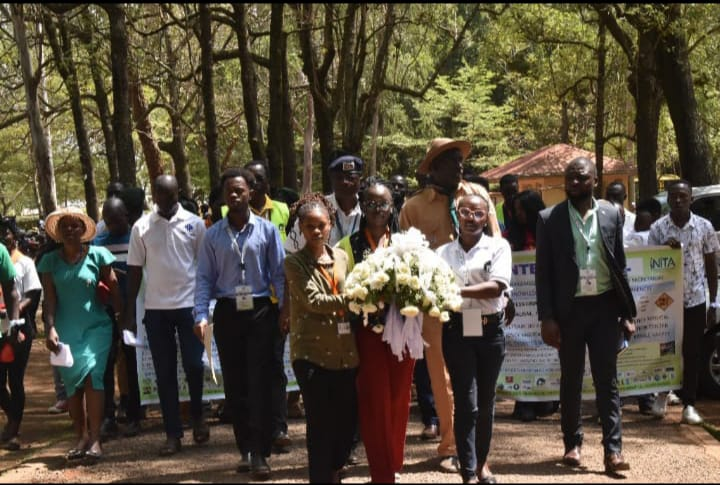
Alpha 10 Emergency Responders operates under a strong legal and ethical framework that protects our members, partners, and the public. Our rules, Constitution, and Code of Conduct ensure transparent leadership, disciplined operations, and world‑class professionalism.
For emergencies, partnerships, training, or membership enquiries, reach out to us using the details below.
Are you a paramedic or passionate about saving lives? Join Alpha 10 Emergency Responders and be part of a disciplined, compassionate, and skilled emergency response community.
Eligible applicants should have relevant emergency response training and a strong alignment with our core values: courage, compassion, and integrity.
Apply to Join Alpha 10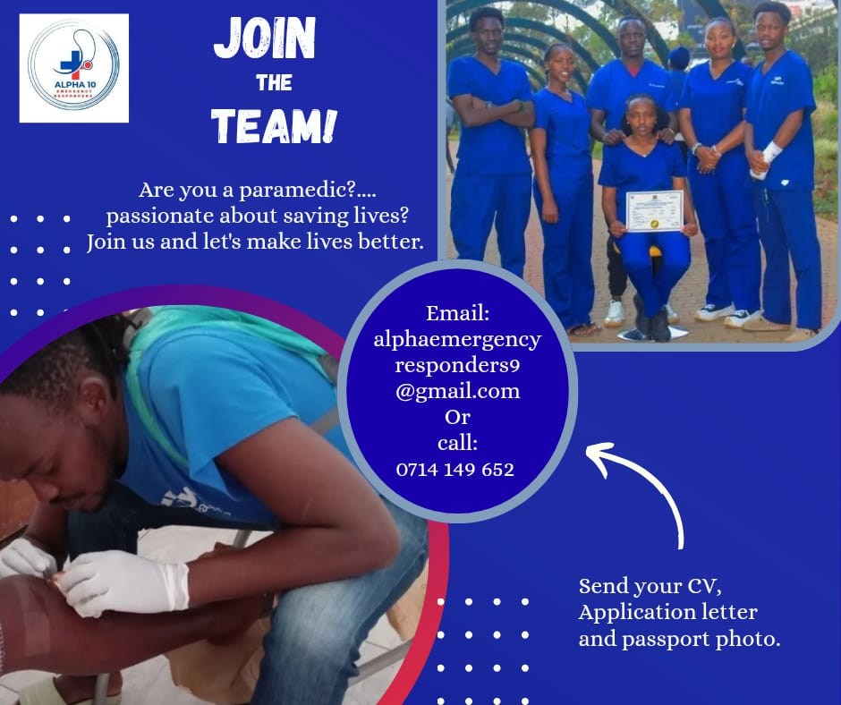